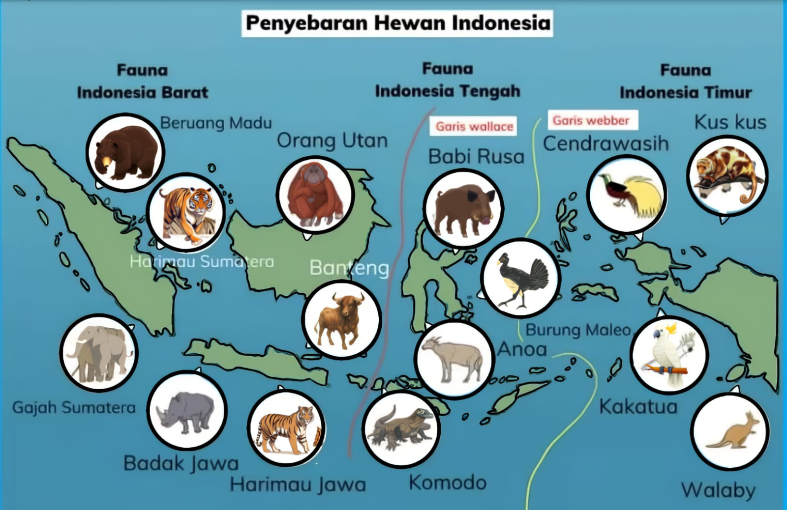

- Sejarah Geologi:
Pergerakan lempeng benua masa lalu memisahkan Indonesia menjadi tiga wilayah (Asiatis, Peralihan, dan Australis) yang dibatasi Garis Wallace dan Weber.


1. Faktor apa yg mempengaruhi kejadian pembagian wilayah Flora dan Fauna di Indonesia?
- Iklim (Klimatik):
Perbedaan curah hujan, suhu, dan kelembapan udara menentukan jenis ekosistem yang terbentuk.
- Kondisi Tanah (Edafik):
Kesuburan dan kandungan zat hara tanah memengaruhi jenis tumbuhan yang dapat hidup.
- Topografi (Fisiografis):
Ketinggian tempat memengaruhi suhu udara, sehingga flora dan fauna di dataran rendah berbeda dengan di pegunungan.